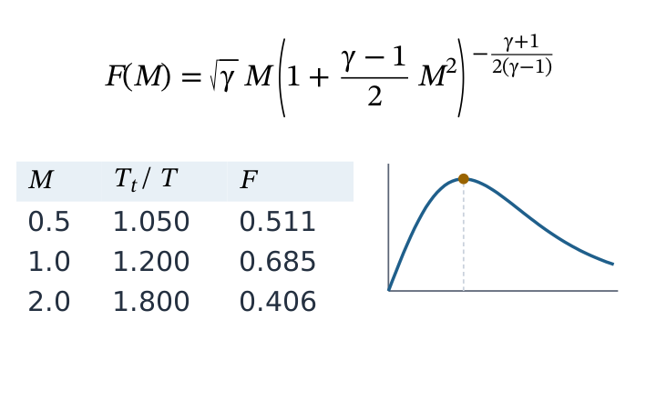

HTML, CSS, Formeln und SVG setzen – ohne Browser
Funktionsübersicht für die Präsentation des envisionz-Frameworks, Stand 28.09.2026. Ein eigener Setzer in reinem Java für die Hilfe- und Dokuseiten aller Apps: HTML-Zerteiler, CSS-Kaskade mit Variablen, Kastenmodell mit Flexbox, Raster und Tabellen, TeX-Formelsatz nach dem TeXbook, SVG-Grafiken, dazu eine Ansicht mit Suche, Verlauf und DE/EN-Umschaltung. Kein eingebetteter Browser, kein JavaFX, keine Fremdbibliothek. Je Stufe: Zweck, Methoden, Einsatz im Framework, Anwendungen, Beispiele. Die Beispiele sind gekürzt.

Grundsätze des Moduls
HtmlParser (Knotenbaum) → StyleResolver (Kaskade) → LayoutEngine (Kastenbaum) → Zeichnen in Swing.JComponent und kennt keine Klasse des Frameworks; eingebunden wird der Setzer über framework-swing.Fassade und Ansicht envisionz.viewer · envisionz.viewer.ui
DokuRendererService – die eine Tür nach außen
Liefert die einbettbare Ansicht und öffnet Dateien, HTML-Text oder Klassenpfad-Ressourcen; bei *_de.html/*_en.html erkennt sie die Sprachfassungen selbst. Leiste und Statuszeile lassen sich für eine reine Anzeige ausblenden, die Satzbreite festlegen und ein gemeinsames Stylesheet setzen.
Methoden
createView()→JComponentopen(File),openHtml(String),openResource(prefixOderPfad),goToAnchor(id)setStylesheet(css),setContentWidth(px),setChromeVisible(b),setHorizontalScrollAllowed(b),isMathFallbackActive()
Eingesetzt in
Wofür
Handbücher und Verfahrensbeschreibungen in jeder App, Formeln eines NFML-Modells im Gleichungslöser, Statistikergebnisse als gesetzte Seite.
Beispiel 1 – Hilfeseite aus dem Klassenpfad
DokuRendererService svc = new DokuRendererService();
panel.add(svc.createView(), BorderLayout.CENTER);
svc.openResource("/envisionz/apps/eqnparser/help/index"); // lädt index_de.html oder index_en.htmlBeispiel 2 – erzeugtes HTML ohne Bedienleiste (so in app-stats)
ergebnis.setChromeVisible(false);
ergebnis.openHtml("<h2>Regression</h2><p>$$R^2 = 0{,}987$$</p>");DocView, DocViewerPanel, DocRenderer – Anzeige, Suche, Verlauf
DocView ist die volle Ansicht: Leiste mit DE/EN und Volltextsuche, Zurück-Verlauf, Statuszeile, Neusatz bei jeder Größenänderung. Erkennt sie eine feste Seitenleiste (nav{position:fixed}), setzt sie Leiste und Inhalt in zwei getrennte Rollflächen. DocViewerPanel zeichnet und trifft Verweise; DocRenderer ist die Fassade HTML → Kastenbaum und hält das Nutzeragent-Stylesheet.
Methoden
DocView:loadFile,loadHtml,loadResource,scrollToAnchor,goBack(),setContentWidthDocRenderer:render(html, breite)→Box,renderContentWithoutFixed,addStylesheet,setRootFontSizeDocViewerPanel.setDocument(box, breite),setLinkHandler
Eingesetzt in
Wofür
Verlinkte Dokusätze wie die Seiten des Gleichungslösers mit fester Navigation links; Seiten kopflos setzen, um sie zu prüfen.
HTML zerteilen envisionz.viewer.html
HtmlParser, Node, Entities, MathExtractor
Ein nachsichtiger Zerteiler, der nie hart scheitert: leere Elemente, implizites Schließen von li, p, td, tr und Tabellenabschnitten nach WHATWG, Rohtext in <style>/<script>, Kommentare und Doctype, unquotierte Attributwerte. Entities löst benannte und numerische Zeichenverweise auf. MathExtractor sucht in Textknoten \( … \) (im Text) und $$ … $$ (abgesetzt) und ersetzt sie durch <nvz-math>-Knoten.
Methoden
HtmlParser.parse(String)→NodeNode:children(),is(tag),attr(name),classList(),id()MathExtractor.process(wurzel),MATH_TAG = "nvz-math"
Eingesetzt in
Wofür
Handgeschriebene Hilfeseiten und erzeugte Berichte lesen, auch wenn sie nicht streng wohlgeformt sind; Formeln im MathJax-Stil übernehmen.
CSS-Kaskade envisionz.viewer.css
CssParser, Selector, StyleResolver, ComputedStyle
Nutzeragent-Stylesheet, <style>-Blöcke, zusätzliche Stylesheets und style-Attribute in der Kaskade mit Spezifität und !important; Vererbung; var(--x) gegen die Wurzelvariablen aufgelöst. Selektoren: Typ, Klasse, ID, Universal, zusammengesetzt und Nachfahren. At-Regeln wie @media und @import werden übersprungen. Kurzformen margin, padding, border-width löschen vorher gesetzte Einzelwerte. Hintergrund, Formeln und Pseudocode →
Methoden
CssParser.parse(css),rules(),rootVariables()Selector.parse(roh),matches(el),specificity()new StyleResolver(),addStylesheet(css),resolve(dokument)→Map<Node, ComputedStyle>Length(PX, EM, REM, PERCENT, PT, EX),CssColor.parse,Display.defaultFor(tag)
Eingesetzt in
Wofür
Ein gemeinsames Doku-Stylesheet mit Variablen, dunkles Thema über umgesetzte Variablen.
em bezieht sich auf die Schrift des Elements und wächst bei Schachtelung mit (drei Ebenen zu 0,9 em ergeben 0,73), rem auf die der Wurzel. Deshalb gibt es beide.Kastenmodell und Satz envisionz.viewer.box
LayoutEngine mit FlexLayout, GridLayout, TableLayout
Blocksatz mit zusammenfallenden Außenabständen, Zeilenumbruch nach Schriftmaßen statt Zeichenzahl, position: fixed/absolute für die Seitenleiste. Flexbox, CSS-Raster mit repeat(auto-fill|auto-fit, minmax(…, 1fr)), repeat(N, …) und gap, Tabellen mit Spaltenbreiten aus den Mindestbreiten des Inhalts. Kästen: BlockBox, TextRunBox, ImageBox (ImageIO, relative Pfade). Hintergrund, Formeln und Pseudocode →
Methoden
new LayoutEngine(stile, wurzelSchriftPx),layout(wurzel, breite)→BoxsetFixedMode(FixedMode)– feste Kästen auslassen, etwa für den DrucksetBaseDir(File)für Bilder,setMaxWidthBoost(faktor)
Eingesetzt in
Wofür
Karten im Raster, Tabellen mit Stoffwerten, Seiten mit fester Navigation links und Inhalt rechts.
Formelsatz envisionz.viewer.math
TexLexer, TexParser, MathLayout, MathRenderer – eine TeX-Teilmenge
Brüche (\frac, \dfrac, \tfrac, \cfrac), Binomialkoeffizienten (\binom), Wurzeln, Hoch- und Tiefstellung, große Operatoren mit Grenzen (\sum, \int, \prod, \lim), Akzente (\hat, \bar, \vec, \dot, \tilde), Schriften (\mathbf, \mathrm, \mathbb, \mathcal, …), \text wörtlich mit Leerzeichen, \operatorname, \bmod/\pmod, das Dezimalkomma 0{,}5, Umgebungen mit \begin/\end, \underbrace/\overbrace mit Beschriftung, \left/\right und \big…\Bigg. Abstände zwischen Atomen nach TeXbook S. 170. Unbekannte Befehle erscheinen als ihr eigener Name. Hintergrund, Formeln und Pseudocode →
Methoden
new MathRenderer(mathSchrift),render(tex, Mode.DISPLAY | INLINE, groessePx)→MathBoxTexSymbols: griechische Buchstaben, Relationen, Pfeile, Mengen- und Logikzeichen, Operatoren (169 Einträge)
Eingesetzt in
Wofür
Die Thermo-Dokumentation mit rund 185 Formeln, Gleichungen eines NFML-Modells, Herleitungen in den Hilfeseiten.
Beispiel – im HTML einer Hilfeseite
<p>Isentroper Wirkungsgrad: $$\eta_s = \frac{h_{2s} - h_1}{h_2 - h_1}$$</p>
<p>Im Text: \( \Pi = p_2 / p_1 \)</p>SVG-Grafiken envisionz.viewer.svg
SvgRenderer, SvgBox – eingebettete Schaubilder
Die Formen rect, circle, ellipse, line, path, polygon, polyline (gefüllt, wie SVG 1.1 verlangt), text und Gruppen g; Beschnitt über <clipPath> in <defs>; Breite auch als 100%. Hintergrund, Formeln und Pseudocode →
Methoden
new SvgRenderer(),render(svgKnoten, breite)→SvgBox
Eingesetzt in
Wofür
Anlagenschemata und Konturbilder in der Dokumentation; die SVG-Ausgabe von framework-flowsheet ist auf diesen Satz abgestimmt.
Schriften envisionz.viewer.paint
MathFontProvider, FontResolver
Die Formelschrift in dieser Reihenfolge: eingebettete STIX Two Math (/fonts/STIXTwoMath-Regular.otf, SIL OFL 1.1), sonst eine installierte Mathe-Schrift (STIX Two Math, STIXGeneral, Cambria Math, Latin Modern Math …), sonst Serif; isUsingFallback() sagt, ob der Rückfall greift. FontResolver bildet font-family-Listen auf AWT-Schriften ab, zwischengespeichert, und sucht für einzelne Zeichen eine Schrift, die sie hat.
Methoden
MathFontProvider.getMathFont(groessePx),isUsingFallback(),RESOURCE_PATHnew FontResolver(),resolve(stil, groessePx),fontForGlyph(basis, codepunkt)
Eingesetzt in
Wofür
Gleiches Formelbild auf jedem Rechner, auch ohne installierte Mathe-Schrift.
Einsatzmatrix im Framework
Welche Module Dokumente mit dem Setzer anzeigen, im Quelltext gezählt (ohne Proben). Nach außen sichtbar ist nur DokuRendererService; die übrigen Pakete arbeiten dahinter.
| Modul | DokuRendererService direkt | über HelpPanel | über Ueber | Wofür |
|---|---|---|---|---|
| framework-swing | ● | HelpPanel, Ueber, HelpDialog | ||
| app-eqnparser | ● | ● | Formelansicht des NFML-Modells, Diagnosereiter, Handbuch | |
| app-stats | ● | Ergebnisse und Hilfe als gesetzte Seite | ||
| app-fileanalysis | ● | Hilfekarte | ||
| app-chiffre | ● | Hilfe | ||
| app-maps | ● | Hilfe | ||
| app-neural | ● | Hilfe | ||
| app-pdfdigitizer | ● | Hilfe | ||
| app-thermo | ● | Thermo-Dokumentation | ||
| app-settings | ● | Karte „Über N-VISIONZ“ |